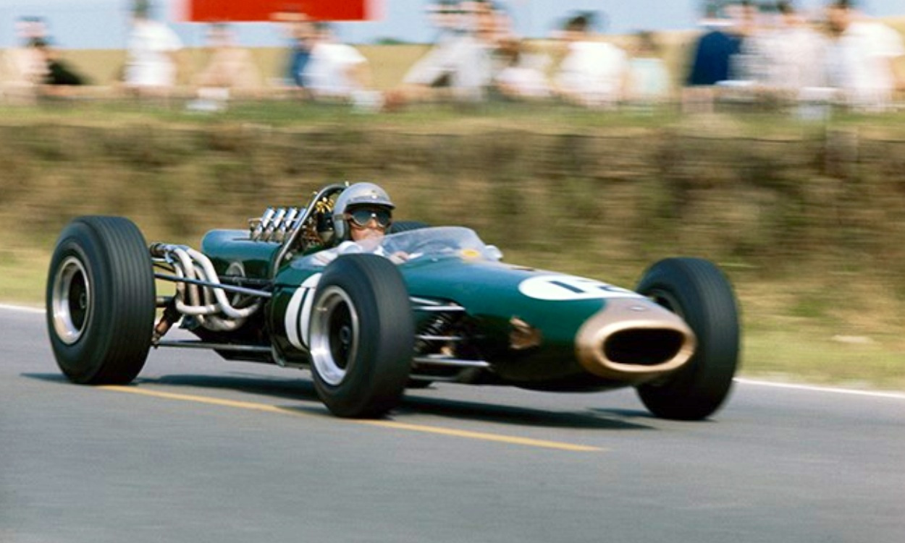

- Jack Brabham was born on 2 April in 1926 in Hurstville, a southern suburb of Sydney, Australia.
- At 18 he joined the Royal Australian Air Force, where he wanted to learn to fly but was instead trained to fill a wartime shortage of flight mechanics.
- After serving for two years as ground crew in the Air Force, Jack formed a one-man motor repair and engineering business in 1946 performing service and repair work on neighbours' cars.
- After the War in 1947 Jack was introduced to midget car racing by an American, John Schonberg who had married the daughter of a neighbour after being discharged from the US Army.
- Jack won the New South Wales championship, the South Australian championship and the Australian championship in 1948-1949.
- After those successes Jack went overseas, financing the trip by selling virtually every piece of motor racing hardware he owned. He later regretted selling his lathe and other workshop machinery.
- When racing in the UK, Gregor Grant, the editor of AutoSport wrote then ". . . This Aussie is certainly a presser-onner and possesses remarkable control over his car. More will be heard of this young gentleman". After less successful years in the beginning he managed to win his first Formula One World Champion title in 1959 and then again in 1960 driving for Cooper.
- In 1961 he founded the Brabham Racing Organisation with Ron Tauranac.
- Jack also competed in the US at Indianapolis, qualifying the first modern mid-engined car at the 500 and finished ninth. A newly introduced engine limit in Formula One of 1500 cc did not suit Jack and he did not win a single race with a 1500 cc car, although his first team win came in 1964 with American, Dan Gurney.
- In 1966 a new 3000 cc formula was created, Brabham in a Brabham-Repco BT-19 won the championship again and became the first driver to win the Formula One World Championship in a car that carried his own name. Jack stated that the BT19 was "beautifully balanced" and he loved its readiness to "drift" through fast curves.
- Following injuries in the 1969 season Brabham intended to retire in 1970 but finding no top drivers available he raced for one more year, retiring after the Mexican Grand Prix. After retiring he made a complete break from racing, selling his interest in the team to Tauranac and returning to Australia.
- Perhaps his most famous race was at the extremely testing Nürburgring, one of his most satisfying of victories in 1966. Conditions at Nurburgring were variable all round the 14-mile (20-km) circuit. Some sections were almost dry, others merely wet and several "absolutely swimming", he commented.
- Jack Brabham was famously known in racing circles as “Black Jack Brabham”, possibly because he was a man of few words and also the "Nut-Brown Australian" as described by Sir Stirling Moss. Sir Jack was inducted into the International Motorsports Hall of Fame in 1990.
Sir Jack Brabham
Australia's Greatest Racing Driver

Sir Jack behind the wheel of his formula one racing car
" Build them, race them, win them, we will never see another like the great Sir Jack Brabham. "
Eric Bana - Twitter